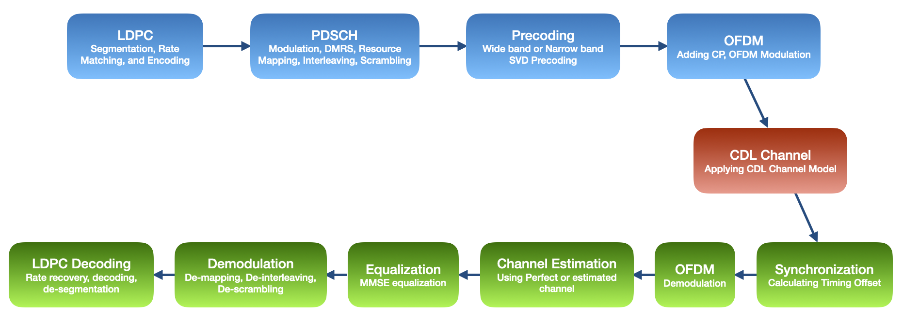
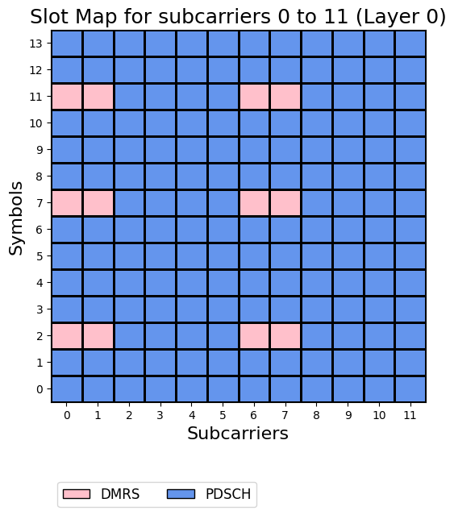

End-to-End PDSCH Communication Simulation
This notebook demonstrates how to simulate an end-to-end 5G NR Physical Downlink Shared Channel (PDSCH) communication link in NeoRadium, following relevant 3GPP NR specifications.
The simulation walks through the full transmit and receive chain, including PDSCH configuration, LDPC channel coding, resource-grid mapping, CDL channel modeling, OFDM modulation and demodulation, channel estimation, MMSE equalization, LLR extraction, LDPC decoding, and final transport-block comparison.
The main steps are:
Create a
PDSCHobject and use it to populate a transmit resource grid with encoded transport-block data.Add DMRS reference signals to the resource grid based on 3GPP TS 38.211 and TS 38.214.
Create an LDPC codec object for LDPC encoding, decoding, rate matching, and rate recovery based on 3GPP TS 38.212.
Create a CDL channel model, as specified in 3GPP TR 38.901, using the
CdlChannelclass.Use the channel matrix to calculate a precoding matrix and precode PDSCH data into transmit resource grid.
Convert the precoded resource grid to a time domain waveform using OFDM modulation.
Apply the CDL channel model to the transmitted waveform.
Add additive white Gaussian noise (AWGN) to the received waveform.
Synchronize the received waveform by estimating the timing offset.
Apply OFDM demodulation to obtain the received resource grid.
Estimate the channel matrix using the DMRS reference signals.
Equalize the received resource grid using minimum mean-squared error (MMSE) equalization.
Extract log-likelihood ratios (LLRs) from the equalized resource grid.
Perform LDPC rate recovery and decoding.
Compare the decoded transport block with the original transmitted transport block.

Let’s begin by importing the NeoRadium modules used in this notebook.
[1]:
import numpy as np
import time
from neoradium import BandwidthPart, PDSCH, CdlChannel, AntennaPanel, random
from neoradium.utils import getNmse
Carrier and Bandwidth Part Configuration
Here, we use the BandwidthPart class to define a bandwidth part with 30 kHz subcarrier spacing and 52 resource blocks. The class internally creates a Carrier object and returns the only bandwidth part in that carrier.
[2]:
bwp = BandwidthPart(numRbs=52, spacing=30)
bwp.print()
Bandwidth Part Properties:
Resource Blocks: 52 RBs starting at 0 (624 subcarriers)
Subcarrier Spacing: 30 kHz
CP Type: normal
Interleaving: No
Bandwidth: 18.72 MHz
symbolsPerSlot: 14
slotsPerSubFrame: 2
nFFT: 1024
frameNo: 0
slotNo: 0
PDSCH and DMRS Configuration
Next, we use the PDSCH class to configure the PDSCH communication parameters. In this example, we use mapping type A and "16QAM" modulation, which is the default. We also set the number of layers to 2.
Next, we set the DMRS configuration using the setDMRS method of the PDSCH class. Here, we set the DMRS configType to 2 and use two additional DMRS symbol positions by setting additionalPos=2.
[3]:
pdsch = PDSCH(bwp, numLayers=2)
pdsch.setDMRS(configType=2, additionalPos=2)
pdsch.print()
PDSCH Properties:
mappingType: A
nID: 1
rnti: 1
numLayers: 2
numCodewords: 1
modulation: 16QAM
PRG Size: Wideband
portSet: 0 1
symSet: 0 1 2 3 4 5 6 7 8 9 10 11 12 13
prbSet: 0 1 2 3 4 5 6 7 8 9 10 11 12 13 14 15 16 17 18 19
20 21 22 23 24 25 26 27 28 29 30 31 32 33 34 35 36 37 38 39
40 41 42 43 44 45 46 47 48 49 50 51
DMRS:
configType: 2
nIDs: []
scID: 0
sameSeq: True
symbols: Single
typeA1stPos: 2
additionalPos: 2
cdmGroups (port:cdm): 0:0 1:0
deltaShifts (port:cdm): 0:0 1:0
numCdmGroupsWithoutData: 1
symSet: 2 7 11
REs (before shift): 0 1 6 7
epreRatioDb: 0 (dB)
Channel Coding Configuration
Next, we create an LDPC codec object for LDPC encoding and decoding. The easiest way to do this is to use the getLdpcCodec method of the PDSCH class.
[4]:
ldpc = pdsch.getLdpcCodec(coderates=490/1024)
ldpc.print()
LDPC Encode/Decode Properties:
Num layers: 2
Num codewords: 1
numIter: 5
nRef: 0
Modulation: 16QAM
Coderate: 490/1024
TBS: 31240
numLayers: 2
Base Graph: 1
Code Block Size: 8448
Num Code Blocks: 4
Lifting Size: 384
Resource Grid Creation and Mapping
Now that we have created the PDSCH and LDPC codec objects, we can use them to perform channel coding and resource mapping. In the following cell, we first create and initialize the PDSCH’s internal resource grid object using the initGrid method of the PDSCH object. This creates a resource grid, generates the DMRS reference signals, and places them in their specified locations within the grid.
We can get the transport block size (TBS) directly from the LDPC codec object. Here, we use it to create random bits for transmission using the utility function random.bits.
The function getBitCapacity returns the total bit capacity of the resource grid for each codeword. This is the total number of encoded data bits that can be transmitted using all PDSCH resources in the grid. It is used to perform rate matching.
The encode method of the LdpcCodec class performs segmentation, rate matching, and LDPC encoding in a single call.
Once we have the rate-matched encoded bits, we can map them to the available resources in the resource grid. This is exactly what the setPdschData method of the PDSCH class does. This function first converts bits to complex symbols using the specified modulation scheme and then assigns the symbols to the resource elements available to this PDSCH in the resource grid across different time, frequency, and layer locations.
The drawMap method of the Grid class is used here to show the PDSCH and DMRS allocations in the resource grid.
[5]:
random.setSeed(123) # Make the results reproducible
pdsch.initGrid() # Create and initialize the internal PDSCH resource grid
txBlock = random.bits(ldpc.txBlockSizes[0]) # Generate random bits. txBlockSizes[0] is the TBS for the first codeword
numBits = pdsch.getBitCapacity() # Number of bits available in the PDSCH resource grid
# Perform segmentation, rate matching, and encoding in one call
rateMatchedCodeBlocks = ldpc.encode(txBlock, numBits[0])
# Populate the PDSCH resource grid with the coded data. This includes QAM modulation and resource mapping.
pdsch.setPdschData(rateMatchedCodeBlocks)
print(f"TX Block Size: {ldpc.txBlockSizes[0]}")
print(f"Resource grid capacity (bits): {numBits[0]}")
print(f"Size of the rate-matched coded block: {rateMatchedCodeBlocks.shape[0]}")
# Get statistics for the resource-grid allocation
gridStats = pdsch.grid.getStats()
print("Grid Allocation Stats:")
for key, value in gridStats.items():
print(f" {key+":":<10s} {value}")
# Draw a resource-grid map showing the data and DMRS in the first RB of the BWP
pdsch.grid.drawMap();
TX Block Size: 31240
Resource grid capacity (bits): 64896
Size of the rate-matched coded block: 64896
Grid Allocation Stats:
GridSize: 17472
PDSCH: 16224
DMRS: 1248

Channel Simulation and Precoding
The next step in the pipeline is the precoding process. For this experiment, we assume the channel information is available and derive the precoding matrix from the channel matrix.
Here we use a CDL channel model as specified in 3GPP TR 38.901. The CdlChannel class is used to create a channel model object. We use a CDL-C model, which simulates NLOS communication. We use a delay spread of 300 ns and a Doppler shift of 5 Hz. We also use a MIMO configuration with 8 transmit antennas and 2 receive antennas. The print function of the CdlChannel class can be used to show all properties of the CDL channel model.
To calculate the precoding matrix, we first get the channel matrix from the CdlChannel object. The channel matrix is a 4-D complex tensor of size l × k × Nr × Nt. Here, l, k, Nr, and Nt are the number of OFDM symbols, the number of subcarriers, the number of receive antennas, and the number of transmit antennas, respectively. In this example, these values are 14, 624 (=52×12), 2, and 8.
Once we have the channel matrix, the getPrecodingMatrix method of the PDSCH class is called to calculate and return the precoding matrix.
To precode the resource grid, we first create a transmit resource grid. Then, we use the precodeTo method of the PDSCH class to map the precoded PDSCH data into that grid, passing in both the transmit resource grid and the precoding matrix.
[6]:
# Create a CdlChannel object
channel = CdlChannel(bwp, 'C', delaySpread=300, carrierFreq=4e9, dopplerShift=5,
txAntenna = AntennaPanel([2,4], polarization="|"), # 8 TX antennas
rxAntenna = AntennaPanel([1,2], polarization="|")) # 2 RX antennas
# channel.print() # Uncomment to print all channel information
# Get the precoding matrix and precode the resource grid
channelMatrix = channel.getChannelMatrix() # Get the channel matrix
precoder = pdsch.getPrecodingMatrix(channelMatrix) # Get the precoding matrix from the PDSCH object
txGrid = bwp.createGrid(len(channel.txAntenna)) # Create the transmit resource grid
pdsch.precodeTo(txGrid, precoder) # Perform the precoding
print(f"Shape of channel matrix: {channelMatrix.shape}")
print(f"Shape of resource grid: {pdsch.grid.shape}")
print(f"Shape of precoded resource grid: {txGrid.shape}")
Shape of channel matrix: (14, 624, 2, 8)
Shape of resource grid: (2, 14, 624)
Shape of precoded resource grid: (8, 14, 624)
OFDM Modulation
To transmit the precoded resource grid, it must first be transformed into the time domain. The method ofdmModulate of the Grid class converts the precoded resource grid into a set of time domain waveforms for each transmit antenna. The output of OFDM modulation is a Waveform object that contains the time domain waveform for each transmit antenna.
[7]:
txWaveform = txGrid.ofdmModulate()
# txWaveform contains the time domain waveform for each transmit antenna
print(f"Shape of txWaveform: {txWaveform.shape}")
Shape of txWaveform: (8, 15360)
Applying the Channel Model to the Transmitted Waveform
Now we need to pass the transmitted waveform through our CDL channel model. Because channel models typically delay signals, we append zeros to the end of the waveform to ensure the entire signal is captured at the channel output. The number of zeros depends on the maximum channel delay, which can be obtained using the getMaxDelay method of the CdlChannel class. The pad method of the Waveform class appends zeros to the end of the waveform.
Now the channel model can be applied to the transmitted waveform to obtain the received waveform. This is exactly what the applyToSignal method of the CdlChannel class does. The output is another Waveform object containing the received waveform for each receive antenna.
The number of zeros depends on the maximum channel delay, which can be obtained using the getMaxDelay method of the CdlChannel class.
[8]:
# Append zeros to the end of the signal based on the maximum channel filter delay
maxDelay = channel.getMaxDelay()
print(f"Maximum channel delay: {maxDelay}")
txWaveform = txWaveform.pad(maxDelay)
# Apply the channel to the transmitted signal
rxWaveform = channel.applyToSignal(txWaveform)
print(f"Shape of rxWaveform: {rxWaveform.shape}")
Maximum channel delay: 87
Shape of rxWaveform: (2, 15447)
Adding Noise
We can use the addNoise method of the Waveform class to add AWGN to the received signal. Since we are adding noise in the time domain, we need to provide a BandwidthPart object so that the required FFT information can be extracted.
[9]:
noisyRxWaveform = rxWaveform.addNoise(snrDb=20, bwp=bwp)
Synchronization and OFDM Demodulation
Because of the multipath delays introduced by the channel model, we need to find the best starting point in the received waveform. This is usually done by finding the position of maximum correlation between the received signal and reference signals.
The getTimingOffset method of CdlChannel provides this timing offset, which is the number of samples to skip from the beginning of the received waveform.
After synchronization, the waveform can be used for OFDM demodulation to obtain the received resource grid. The method ofdmDemodulate creates a Grid object containing the noisy received resource grid.
[10]:
# Synchronization: get the timing offset
offset = channel.getTimingOffset()
syncedWaveform = noisyRxWaveform.sync(offset)
print(f"Timing Offset: {offset}")
# OFDM demodulation
noisyRxGrid = syncedWaveform.ofdmDemodulate(bwp)
print(f"Shape of received resource grid: {noisyRxGrid.shape}")
Timing Offset: 13
Shape of received resource grid: (2, 14, 624)
Applying the Channel in the Frequency Domain
As a shortcut, the channel model can also be applied directly to the transmit resource grid without converting the signal to the time domain.
The method applyChannel of the Grid class can be used to apply a channel matrix to a resource grid.
[11]:
# Apply the channel model in the frequency domain
rxGridFreq = txGrid.applyChannel(channelMatrix)
# Add noise in the frequency domain
noisyRxGridFreq = rxGridFreq.addNoise(snrDb=20)
# Compare the noisy received resource grids in the time and frequency domains.
# Note that the difference is partly because of different noise values.
print(f"NMSE between received grids in the time and frequency domains: {getNmse(noisyRxGridFreq.grid, noisyRxGrid.grid):.6f}")
NMSE between received grids in the time and frequency domains: 0.001305
Channel Estimation
The inputs to the channel estimation process are the received resource grid and the known reference signals. The output is the estimated channel matrix. Note that, in this case, the estimated channel includes the effect of precoding. This is because the DMRS reference signals were inserted into the resource grid before precoding.
Perfect Channel Knowledge
For perfect channel estimation, we need to apply precoding to the channel matrix. This can be done using the getEffChannel method of the channel model object.
Practical Channel Estimation
The method estimateChannel of the PDSCH class can be used to estimate the channel matrix. This method performs CDM averaging, least-squares channel estimation at pilot locations, and applying interpolation to get the whole channel matrix. Note that this function also returns errVar, which is the variance of the effective residual uncertainty associated with the estimated channel. This value is used in the next step: equalization.
[12]:
# Perfect channel estimation: apply precoding to the channel matrix
perfectChannelMatrix = channel.getEffChannel(channelMatrix, precoder)
# Least-squares channel estimation
estChannelMatrix, errVar = pdsch.estimateChannel(noisyRxGrid)
print(f"Shape of perfect channel matrix: {perfectChannelMatrix.shape}")
print(f"Shape of estimated channel matrix: {estChannelMatrix.shape}")
Shape of perfect channel matrix: (14, 624, 2, 2)
Shape of estimated channel matrix: (14, 624, 2, 2)
Equalization
Now that we have an estimate of the channel matrix, we can use it for equalization. The equalize method of the PDSCH class uses minimum mean-squared error (MMSE) equalization to mitigate the effects of the channel on the received resource grid.
It outputs a Grid object containing the equalized received resource grid, along with LLR scaling values that are used later to scale the log-likelihood ratios from the demodulation process.
In the following cell we use both our perfect channel matrix and the estimated channel matrix to equalize the received resource grid and compare the results.
[13]:
# Using the perfect channel matrix
eqGridPerf, llrScales = pdsch.equalize(noisyRxGrid, perfectChannelMatrix)
print(f"Shape of equalized grid (perfect): {eqGridPerf.shape}")
# Using the estimated channel matrix
eqGridEst, llrScalesEst = pdsch.equalize(noisyRxGrid, estChannelMatrix, errVar)
print(f"Shape of equalized grid (estimated): {eqGridEst.shape}")
print(f"NMSE between equalized grids (perfect vs estimated): {getNmse(eqGridPerf.grid, eqGridEst.grid):.6f}")
print(f"Shape of LLR Scales: {llrScales.shape}")
Shape of equalized grid (perfect): (2, 14, 624)
Shape of equalized grid (estimated): (2, 14, 624)
NMSE between equalized grids (perfect vs estimated): 0.012428
Shape of LLR Scales: (2, 14, 624)
Demodulation, Layer Demapping, and Descrambling
The method getLLRs of the PDSCH class performs demodulation, de-mapping, and descrambling of the received grid in one call. The output of this process is a set of log-likelihood ratios (LLRs) extracted from the received resource grid for each codeword. Note that in this example there is only one codeword.
[14]:
llrs = pdsch.getLLRs(eqGridPerf, llrScales)
print(f"Length of LLRs for the first codeword: {llrs[0].shape[0]}")
Length of LLRs for the first codeword: 64896
Rate Recovery and LDPC Decoding
We are close to the end of the pipeline. We now need to decode the LLRs to recover the original transport blocks. To do this, we use the decode method of the LdpcCodec class. This method performs rate recovery, decodes the code blocks, checks the CRCs, and merges the decoded code blocks back into a single transport block for each codeword. The output of this method for each codeword is the decoded transport block as well as an array of CRC match flags. The first flag indicates whether
the CRC matches for the whole transport block, and the remaining flags indicate whether the CRC matches for each code block.
[15]:
decodedTxBlocks, crcMatch = ldpc.decode(llrs)
print(f"Shape of decoded transport block: {decodedTxBlocks[0].shape}") # decodedTxBlocks[0] -> first codeword
print(f"Transport block CRC match: {crcMatch[0][0]}") # crcMatch[0] -> CRC match flags for the first codeword
print(f"CRC match for each decoded block: {crcMatch[0][1:]}")
Shape of decoded transport block: (31240,)
Transport block CRC match: True
CRC match for each decoded block: [ True True True True]
Comparing the Decoded Transport Block with the Original
Now we can compare the results with the original transport block that was randomly generated at the beginning of this pipeline.
[16]:
print(f"Number of bit mismatches between the decoded and original transport blocks: "
f"{np.abs(decodedTxBlocks[0]-txBlock).sum()}")
Number of bit mismatches between the decoded and original transport blocks: 0
[ ]: